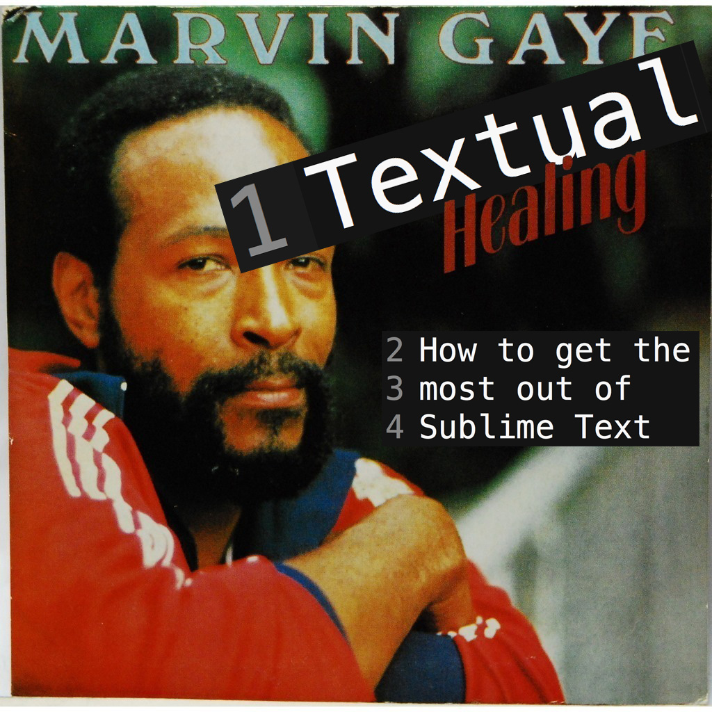

A presentation by Alex "Cobra" Nied
Sublime Text
A fast and sophisticated text editor (not an IDE) that offers out-of-the-box support for multiple languages.
But you already knew that...
...what else?
Sublime Text has a ton of cool features you may not be using yet!
COMMAND PALETTE
Multi-line editing
Advanced selection methods
Plugins! Plugins! Plugins!
Flexible layout
Snippets
Customizable
Advanced navigation
...and more!
The COMMAND PALETTE
→→→ ⇧⌘P ←←←
Fuzzy-search fast-access to Sublime Text functionality.
Multi-line Editing
Because writing code one-line-at-a-time is for chumps.
Next word: ⌘D || Skip word: ⌘K
Break selection into lines: ⇧⌘L
Block selection: ⌥ + [click]
Advanced Selection Methods
Select all the things!
Expand selection to element level in HTML/XML:
⇧⌘A
Expand selection to scope level in JS:
⇧⌘Space
Expand selection to indentation level (Coffeescript/Python/Ruby):
⇧⌘J
...and more!
Quickies & Niceities
- Toggle comments
- Single-line: ⌘/
- Block comment: ⌥⌘/
- Automatic wrapping of enclosures around selection
- Goto line: ⌃G
- Move line: ⌃⌘ + [Up/Down Arrows]
- Quick open file: ⌘T
- Paned layouts: View > Layout
- Paste & Indent: ⇧⌘V
- Distraction-free mode:
View > Enter Distraction Free Mode
HTML Extras
Wrap selection with tag:
⌃⇧W
Encode special characters:
[Find in the Command Palette]
Snippets:
[Find in the Command Palette]
- Package Control - Sublime package manager
- Emmet - Shortcut scaffolding to rapidly generate HTML
- Sublimerge - Excellent file diff tool-- integrates with Git/SVN projects
- Linting/Hinting tools-- Pick your poison :)
- HTML/CSS/JS Prettify-- Pretty much just what it says
Themes and customization
Make Sublime Text your own...
"Platform-friendly"
Single-user license for unlimited computers: OSX, Windows and Linux!
Explore!
Sublime Text is full of cool features-- go discover some of your own!